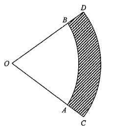

In the figure, \(OAB\) and \(OCD\) are sectors with centre \(O\), where \(OA = 33\text{ cm}\) and \(OC = 39\text{ cm}\). The area of the shaded region \(ABDC\) is \(72\pi\text{ cm}^2\).
Which of the following is/are true?
I. The angle of the sector \(OAB\) is \(60^\circ\).
II. The area of the sector \(OAB\) is \(11\pi\text{ cm}^2\).
III. The perimeter of the sector \(OCD\) is \(13\pi\text{ cm}\).

Both \(OAB\) and \(OCD\) are sectors of the same central angle:
\(\angle AOB=\angle COD=\theta\)
So the radius of the big sector is \(39\) cm and of the small one is \(33\) cm.
\(\underbrace{\tfrac{\theta}{360^\circ}\pi(39)^2}_{\text{sector }OCD}-\underbrace{\tfrac{\theta}{360^\circ}\pi(33)^2}_{\text{sector }OAB}=72\pi\)
\(\dfrac{\theta}{360^\circ}\pi\left(39^2-33^2\right)=72\pi\)
Since \(39^2-33^2=(39-33)(39+33)=6\times 72=432\),
\(\dfrac{\theta}{360^\circ}\times 432=72\;\Rightarrow\;\theta=\dfrac{72\times 360^\circ}{432}=60^\circ\)
✓ Statement I is TRUE — angle of sector \(OAB\) is \(60^\circ\).
\(\text{Area}=\pi(33)^2\times\dfrac{60^\circ}{360^\circ}=\pi(1089)\times\dfrac16=\dfrac{363\pi}{2}\text{ cm}^2=181.5\pi\text{ cm}^2\)
This is not \(11\pi\text{ cm}^2\).
✗ Statement II is FALSE
Perimeter = two radii + arc length:
\(P=OC+OD+\text{arc }CD=2(39)+2\pi(39)\times\dfrac{60^\circ}{360^\circ}\)
\(P=78+78\pi\times\dfrac16=78+13\pi\text{ cm}\)
The statement says \(13\pi\text{ cm}\) — it omits the two radii.
✗ Statement III is FALSE
Hence the answer is A. I only.